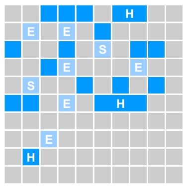
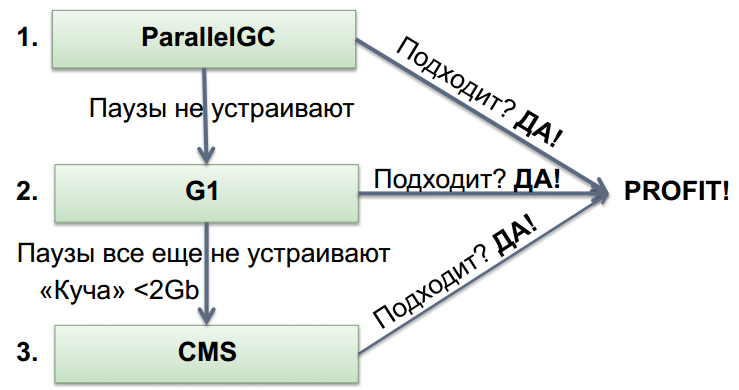

int i = 25; // размер примитива
Integer b = 25; // размер(reference) + размер примитива (int)Garbage Collector
Intro
Размер объекта
JVM хранит для каждого объекта:
Заголовок объекта;
8 байт (32-х разрядная ОС)
16 байт (64-х разрядная ОС)
Память для примитивных типов;
Память для ссылочных типов;
Смещение/выравнивание
Размер объекта
Размер объекта
Заголовок: 16 байт
Поле
int: 4 байтаВыравнивание для кратности 8: 4 байта
Итого: 24 байта
GC
Общие термины
В Java пересмотрена концепция динамического распределения памяти: отсутствуют способы освобождения динамически выделенной памяти. Вместо этого реализована система автоматического освобождения памяти Garbage Collection (Сборка мусора), выделенной с помощью оператора
new.Garbage Collector/GC (Сборщик мусора) — специальный процесс периодически освобождающий память, удаляя объекты, которые уже не будут востребованы приложениями — то есть производит Garbage Collection (Сборка мусора).
GC
Объекты создаются динамически с помощью операции
new, а уничтожаются автоматически.Garbage Collector уничтожает объекты, которым не соответствует ни одна ссылка из активного потока.
Когда никаких ссылок на объект не существует (все ссылки на него вышли из области видимости программы) предполагается, что объект больше не нужен, и память, занятая объектом, может быть освобождена.
GC
Сборка мусора происходит нерегулярно во время выполнения программы. Рекомендовано ее выполнить вызовом метода
System.gc()илиRuntime.getRuntime().gc().Аналогом деструктора можно считать метод
finalize(), который исполняющая среда языка Java будет вызывать каждый раз, когда сборщик мусора будет уничтожать объекты этого класса.Вызов метода
System.runFinalization()приведет к запуску методаfinalize()для объектов утративших все ссылки.
Классификация GC
Классификация: Concurrent vs. Stop-The-World
Concurrent Collector (Конкурентный сборщик) осуществляет Garbage Collection одновременно с работой приложения.
Stop-The-World Collector работает при ПОЛНОЙ ОСТАНОВКЕ работы приложения.
Классификация: Parallel vs. Serial
Parallel Collector (Параллельный сборщик) использует несколько потоков для осуществления Garbage Collection.
Serial collector (Серийный сборщик) выполняет Garbage Collection в одном потоке.
Классификация
Классификация: Incremental vs. Monolithic
Incremental collector (Инкрементальный сборщик) производит Garbage Collection в виде серий более мелких дискретных операций с возможными перерывами между ними.
Monolithic collector (Монолитный сборщик) выполняет Garbage Collection в виде одной цельной операции.
Сборка: Точная vs. Консервативная
GC называется Conservative (консервативным), если во время Garbage Collection у него нет точной информации обо всех ссылках на объекты, или он не может точно определить, является поле указателем или нет.
Сборка: Точная vs. Консервативная
GC называется Precise (точным), если во время Garbage Collection он может точно определить и обработать все ссылки на объекты.
GC ДОЛЖЕН быть Precise, чтобы иметь возможность перемещать объекты.
Компиляторам нужно предоставлять много информации (
oopmaps)
Все коммерческие серверные JVM используют Precise GC.
Основные алгоритмы
Что общего в алгоритмах для Precise GC?
Определение используемых (live) объектов в памяти.
Восстановление ресурсов, занятых неиспользуемыми (dead) объектами.
Периодическое перемещение используемых объектов.
Примеры:
Mark/Sweep/Compact (основной для Old Generations)
Copying collector (основной для Young Generations)
Mark (aka Trace)
Начинается из источников (roots) (стеки потоков, статические переменные, …)
Отмечаем всё достижимое как используемое (live)
По окончанию прохода:
Все достижимые объекты будут отмечены как используемые.
Все недостижимые объекты будут отмечены как неиспользуемые.
Замечание: процесс линеен по отношению к live set.
Sweep
Сканируем кучу, определяя неиспользуемые объекты, и каким-либо образом отслеживаем их.
Замечание: процесс линеен по отношению к размеру кучи.
Compact
Со временем куча станет фрагментированной.
Сжатие перемещает все используемые объекты вместе (aka relocate).
При сжатии необходимо изменить все ссылки на перемещаемые объекты (aka remap).
Сканирование для переопределения указателей должно покрывать все связи, которые могут указывать на перемещённые объекты.
Замечание: процесс линеен по отношению к live set.
Copy
Сборщик копирования перемещает все используемые объекты из исходной области в конечную и переобъявляет исходную область.
В начале копирования все объекты находятся в исходной области, и все ссылки указывают на исходную область.
Начиная с источников, все достижимые объекты копируются в конечную область, при этом корректируя указатели.
По завершении копирования все объекты находятся в конечной области, и все ссылки указывают на конечную область.
Замечание: процесс линеен по отношению к live set.
Иллюстрация примеров
Иллюстрация примеров
Generational Collection
Слабое предположение о поколениях: большинство объектов быстро становятся неиспользуемыми (most objects die young).
Усилия сборки сосредотачиваются на молодом поколении:
Используется перемещающий сборщик: линейно к live set.
Live set в молодом поколении занимает малый процент места.
Объекты, используемые достаточно долго, перемещаются в старшие поколения (older generations).
Generational Collection
Сборка старших поколений производится только при их заполнении.
Как правило, на порядок эффективнее.
Сборка с разделением поколений
Необходим Remembered set: способ отслеживать все ссылки на молодое поколение извне.
Remembered set также является источником при сборке в молодом поколении.
Нет нужды в удвоенном live set: можно перемещать в старшее поколение
Сборка с разделением поколений
Обычно выживающие объекты стоит придержать некоторое время в молодом поколении, прежде чем повышать их до старшего.
Немедленное повышение может снизить эффективность фильтра поколений.
Слишком долго ожидание повышения может неприятно увеличить продолжительность копирования.
Сборка с разделением поколений
В молодом поколении обычно используется копирующий сборщик.
Сборка в молодом поколении обычно монолитная, stop-the-world.
В старшем поколении обычно используется Mark/Sweep/Compact.
Основные сборщики мусора
Основные сборщики мусора
HotSpot™ ParallelGC
HotSpot™ ConcMarkSweepGC (aka CMS)
HotSpot™ G1GC (aka Garbage First)
HotSpot™ ParallelGC
Монолитный Stop-the-world копирующий сборщик для младшего поколения.
Монолитный Stop-the-world Mark/Sweep/Compact сборщик для старшего поколения.
HotSpot™ ConcMarkSweepGC (aka CMS)
Монолитный Stop-the-world копирующий сборщик для младшего поколения.
По большей части конкурентный, не использующий сжатие сборщик для старшего поколения (CMS)
По большей части конкурентный Mark
Маркировка одновременно с выполняющейся программой.
Отслеживаем изменения посещённых регионов в картах отметок.
Снова посещаем отмеченные регионы (повторяем по необходимости).
Stop-the-world при малом наборе изменений с малой паузой для завершения процесса.
Конкурентный Sweep
Нет стадии Compact (работает со списками свободных мест, не перемещает объекты)
Возврат к полной сборке (Monolithic Stop the world).
Для сжатия, обработки изменений при их высокой частоте и т.д.
Java 7 HotSpot VM
Java 7 HotSpot VM
Eden Space (heap): область, в которой большая часть объектов объявляется первоначально.
Survivor Space (heap): объекты, пережившие сборку в Eden.
Old Generation (heap): объекты, пережившие определённое количество сборок в survivor.
Permanent Generation (non-heap): описания классов Java, пул строк и некоторые дополнительные данные.
Code Cache (non-heap): память для компиляции и хранения нативного кода.
Java 8 HotSpot VM

What is Metaspace?
Metaspace это замена PermGen, основное отличие которой с точки зрения Java-программистов — возможность динамически расширятся, ограниченная по умолчанию только размером нативной памяти. Параметры
PermSizeиMaxPermSizeотныне упразднены (получив эти параметры JVM будет выдавать предупреждение о том, что они более не действуют), и вместо них вводится опциональный параметрMaxMetaspaceSize, посредством которого можно задать ограничение на размер Metaspace.В результате максимальный Metaspace по умолчанию не ограничен ничем кроме предела объёма нативной памяти. Но его можно по желанию ограничить параметром
MaxMetaspaceSize.
HotSpot™ G1GC (aka Garbage First)
Монолитный Stop-the-world копирующий сборщик для младшего поколения.
По большей части конкурентный Mark для старшего поколения.
По большей части конкурентная маркировка
Stop-the-world для обработки изменений, исправления ссылок, …
Отслеживает межрегиональные отношения в remembered sets
Stop-the-world по большей части инкрементное сжатие для старшего поколения.
Цель: Избегать как можно дольше полной сборки…
Сжимать наборы регионов, которые могут быть обработаны за ограниченное время.
Откладывать сжатие популярных объектов и регионов.
Возврат к полной сборке (Monolithic Stop the world).
Используется для сжатия популярных объектов, регионов, …
G1 : Структура Heap

G1 : Структура Heap
Разбита на регионы:
Фиксированного размера.
1MB-32MB.
Молодое поколение:
Набор регионов.
Eden и Survivor.
Выбираются динамически.
G1 : Структура Heap
Старое поколение:
Набор регионов.
Выбираются динамически.
Большие объекты:
Не помещается в регион.
Называется humongous.
Хранится в наборе смежных регионов.
G1 : Структура Heap
G1 : Структура Heap
Регионы, в которых будет происходить GC:
Все молодое поколение
Некоторые регионы из старшего поколения
Фоновая маркировка определяет наиболее подходящие
Копирование объектов в регионы, помеченные как часть «To»-пространства:
Survivor-регионы
Регионы из старшего поколения
G1 : Структура Heap
G1 : Структура Heap
Освобождение памяти:
From-space больше чем To-space (необязательно!)
Компактификация за счет копирования
G1 : Структура Heap
G1 : Структура Heap
RSet ~ Remembered Set
Информация о местонахождении ссылок на объекты из региона.
Позволяет собирать регионы независимо.
RSet поддерживается:
Из старого в молодое поколение.
Между регионами в старом поколении.
Настройка сборщика
Критерии выбора размера Heap
Чем больше памяти, тем лучше для GC.
Как для молодого, так и для старшего поколения
Более редкие сборки
Ниже затраты на сборку мусора
Доступный объем памяти ограничен
Физическая память
32-битный режим
Наличие других приложений в системе
Управление размерами поколений
Размер Heap: с чего лучше начать?
LDS = Live Data Size
Размер множества достижимых объектов для приложения в стабильном состоянии
-Xms/-Xmx= 3-4x LDS-XX:PermSize= 1.2-1.5x от макс. размера PermGenРазмеры поколений
Молодое поколение:
-Xmn= 1-1.5x LDSСтаршее поколение:
-Xmx= 2-3x LDS +-Xmn
Пример:
Если LDS == 512m, тогда
-Xmn768m-Xms2g-Xmx2g
Время жизни объектов: Как должно быть
Время жизни объектов
-XX:+PrintTenuringDistribution
Desired survivor size 3342336 bytes, new threshold 6 (max 6 ) - age 1: 2483440 bytes, 2483440 total - age 2: 501240 bytes, 2984680 total - age 3: 50016 bytes, 3034696 total - age 4: 49088 bytes, 3083784 total - age 5: 48616 bytes, 3132400 total - age 6: 50128 bytes, 3182528 total
Время жизни объектов
Как должно быть
Desired survivor size 6684672 bytes, new threshold 8 (max 8) - age 1: 2315488 bytes, 2315488 total - age 2: 19528 bytes, 2335016 total - age 3: 96 bytes, 2335112 total - age 4: 32 bytes, 2335144 total
Время жизни объектов
Как бывает (I)
Desired survivor size 3342336 bytes, new threshold 1 (max 6) - age 1: 3956928 bytes, 3956928 total
Время жизни объектов
Вывод: размер Survivor слишком мал.
Решение: увеличить размер Survivor и/или Eden.
-XX:MaxNewSize/-Xmn-XX:SurvivorRatio=<ratio>соотношение между Eden и Survivor
Время жизни объектов
Как бывает (II)
Desired survivor size 3342336 bytes, new threshold 6 (max 6) - age 1: 2483440 bytes, 2483440 total - age 2: 501240 bytes, 2984680 total - age 3: 50016 bytes, 3034696 total - age 4: 49088 bytes, 3083784 total - age 5: 48616 bytes, 3132400 total - age 6: 50128 bytes, 3182528 total
Время жизни объектов
Вывод: настройки не оптимальны.
Решение: 2 варианта:
Увеличить MTT: 6 → [7…]
Установить MTT = 2
Паузы: Молодое поколение
Продолжительность малых сборок:
Часто является причиной задержек, вызванных GC
Важна как продолжительность, так и частота
Если малые сборки:
продолжительны, то значит уменьшится размер молодого поколения
часты, то значит увеличится размер молодого поколения
Паузы: выбор GC
